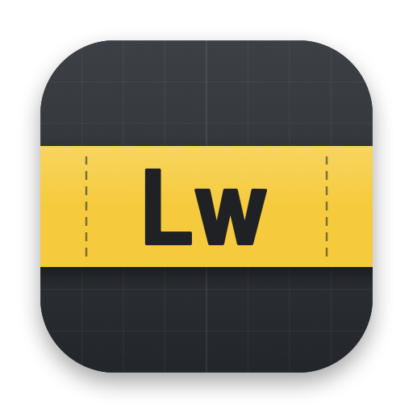
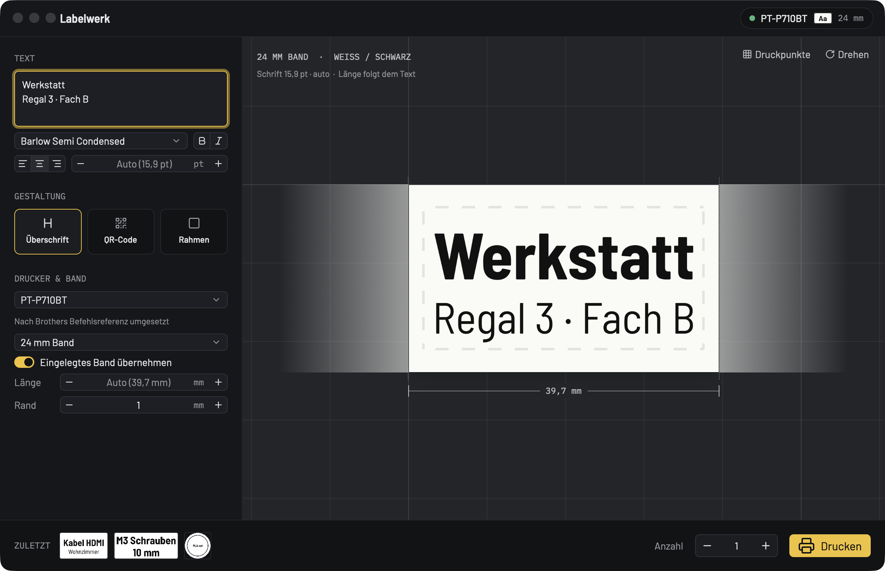

Labelwerk 0.1 AlphaLabelwerk ist eine schlanke Mac-App für Brother-Labeldrucker der QL- und PT-Serie. Text eintippen, das Etikett in echter Größe sehen, drucken. Ohne P-touch Editor, ohne Treiber, Open Source.

Ein Fenster, ein Textfeld, eine Vorschau. Labelwerk liest aus, welcher Drucker angeschlossen ist und welches Band drinsteckt, und stellt sich selbst darauf ein.
Das Etikett liegt auf einem Zentimeterraster, mit Maß und Schnittkanten. Was du siehst, ist das Layout, das gedruckt wird. „Druckpunkte" zeigt die echten Punkte des Druckkopfs.
Größe automatisch so groß wie möglich oder fest in pt. Erste Zeile als Überschrift, fett, kursiv, Ausrichtung, mitgelieferte Barlow oder jede Systemschrift.
Modell, Bandbreite, Bandfarbe und Fehler wie „Deckel offen" oder „kein Band eingelegt" kommen direkt vom Gerät. Die Vorschau zeigt das Etikett in der echten Bandfarbe.
Die Länge folgt dem Text oder ist fest in mm. Text längs oder quer mit ⌘R. Vorgestanzte und runde QL-Etiketten sind genauso dabei.
QR-Code mit dem Etikettentext oder eigenem Inhalt, dazu Rahmen und Rand. Ein Klick, kein Dialog.
Die zuletzt gedruckten Etiketten liegen unten als Miniaturen. ⌘P druckt, die Anzahl steht direkt daneben.
Die Modell- und Bänderdaten stammen aus den Gerätedefinitionen von P-touch Editor, das Protokoll je Modell aus Brothers Raster-Referenzen. Wie gut ein Modell geprüft ist, steht offen dabei.
Dein Drucker druckt (oder nicht)? Ein Issue mit der Ausgabe von labelwerk status --json hilft, ihn auf „geprüft" zu bringen.
xattr -dr com.apple.quarantine /Applications/Labelwerk.appAlpha heißt: Es druckt, aber es fehlen noch Dinge (Netzwerk und Bluetooth, Bilder, Barcodes außer QR, Windows). Alle Versionen: Releases.
# angeschlossener Drucker und eingelegtes Band labelwerk status # Etikett drucken, drei Stück labelwerk print -t "M3 Schrauben" --copies 3 # Vorschau als PNG labelwerk render -t "Kabel\nHDMI" --bold -o vorschau.png # alle Modelle, alle Bänder eines Modells labelwerk models labelwerk media --model PT-P710BT
Die CLI liegt als labelwerk-cli-…-macos.tar.gz im Release. --json liefert maschinenlesbare Ausgabe.